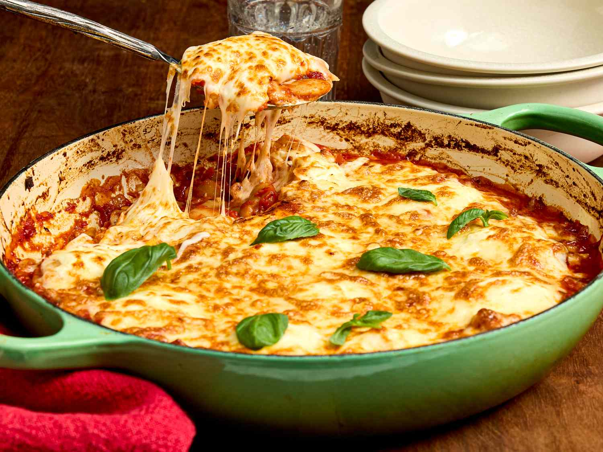

Lasagna Recipe

Description
This is a delicious lasagna recipe that everyone will love!
Ingredients
- 1 pound ground beef
- 1 onion, chopped
- 2 cloves garlic, minced
- 1 (28 ounce) can crushed tomatoes
- 2 (6 ounce) cans tomato paste
- 2 (6.5 ounce) cans canned tomato sauce
- 1/2 cup water
- 2 tablespoons white sugar
- 1 1/2 teaspoons dried basil leaves
- 1/2 teaspoon fennel seeds
- 1 teaspoon Italian seasoning
- 4 tablespoons chopped fresh parsley
- 1 teaspoon salt
- 1/4 teaspoon ground black pepper
- 4 tablespoons chopped fresh parsley
- 12 lasagna noodles
- 16 ounces ricotta cheese
- 1 egg
- 3/4 teaspoon salt
- 3/4 pound mozzarella cheese, sliced
- 3/4 cup grated Parmesan cheese
Steps
- Preheat the oven to 375°F (190°C).
- Cook the ground beef in a large skillet until browned.
- Add the onion and garlic, and cook until the onion is translucent.
- Stir in the tomatoes, tomato paste, and tomato sauce.
- Simmer the sauce for 20 minutes.
- Cook the lasagna noodles according to package instructions.
- Preheat the oven to 375°F (190°C).
- In a mixing bowl, combine the ricotta cheese, egg, and salt.
- Spread a portion of the meat sauce in the bottom of a 9x13 inch baking dish.
- Layer the lasagna noodles, ricotta mixture, and mozzarella cheese.
- Repeat the layers, ending with a layer of meat sauce.
- Sprinkle the Parmesan cheese on top.
- Bake for 30 minutes, or until the cheese is bubbly and golden brown.
Home